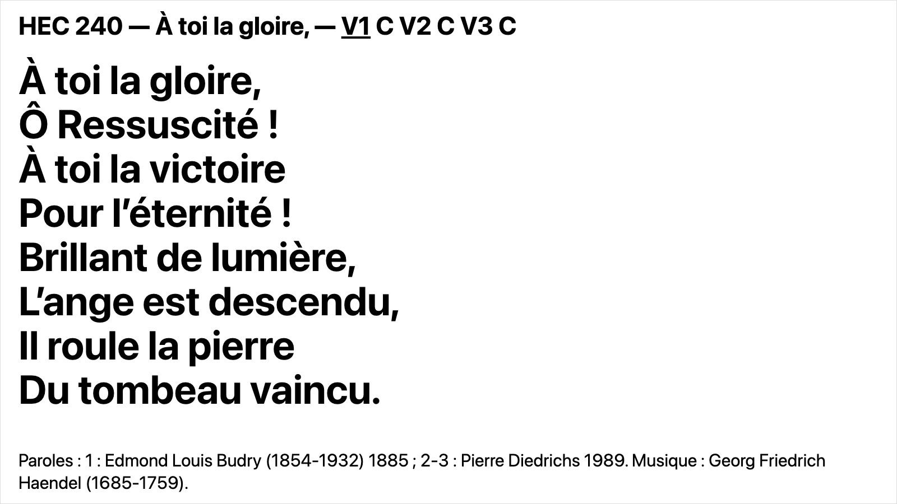
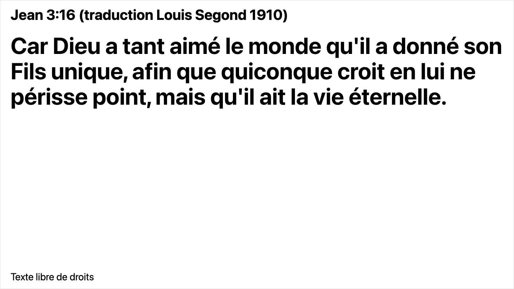
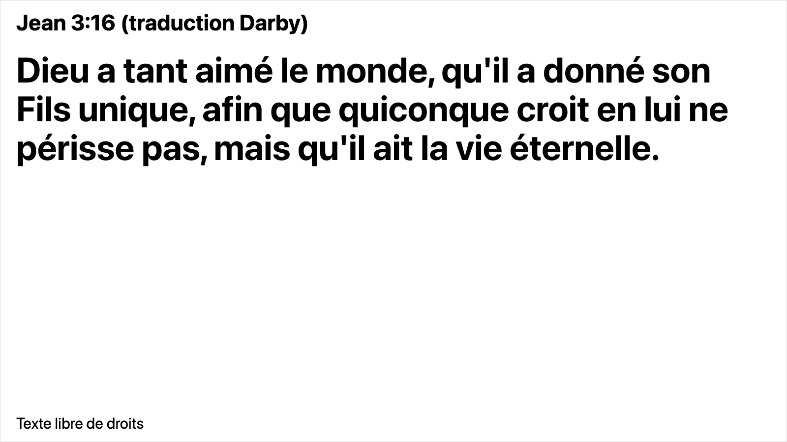

Projetez chants et versets sans perdre le fil du culte.
Pendant que l'assemblée chante, une touche suffit pour passer à la strophe suivante. Une lecture biblique ? Tapez la référence, le texte s'affiche. Verso est gratuit, sur Windows comme sur Mac, et fonctionne sans Internet.

Tout se fait au clavier
Tapez le numéro d'un chant ou ses premiers mots, avec ou sans accents, ou une référence comme « jean 3 », puis appuyez sur Entrée. Ensuite, les flèches font défiler les strophes et les versets. Vos mains restent sur le clavier : pas besoin de chercher la souris en plein culte.
Les recueils Reflets 4 et Hymnes et Cantiques sont fournis avec Verso.
| Chercher | / ou CtrlF |
|---|---|
| Choisir un résultat | ↑↓ puis Entrée |
| Strophe ou verset suivant | ↓ ou Entrée |
| Strophe ou verset précédent | ↑ |
| Changer d'onglet (chants, Bible, PDF) | Tab |
| Ouvrir la projection | CtrlP |
| Vider l'écran | CtrlM |
Une autre traduction, en un clic
Le verset est projeté en Louis Segond, mais le prédicateur lit la Darby ? Cliquez sur Darby : le même verset s'affiche dans cette traduction, sans avoir à le rechercher.
Trois traductions sont fournies : Darby, Darby révisée et Louis Segond 1910. Vous pouvez en ajouter d'autres.


Vos PDF, projetés tels quels
Annonces, affiches, partitions : ajoutez le fichier dans Verso et toutes ses pages apparaissent en vignettes. Cliquez sur une vignette, ou utilisez les flèches du clavier, pour afficher la page sur l'écran de projection. Les images fonctionnent de la même façon.
Rapide à installer, facile à mettre à jour
Verso se télécharge et s'installe en quelques instants. Une fois installé, il fonctionne sans connexion Internet : elle ne sert qu'à recevoir les nouvelles versions. Lorsqu'une nouvelle version est disponible, un bouton « Mise à jour disponible » apparaît à l'ouverture de Verso : cliquez dessus et laissez-vous guider.
- 10 Mo
- à télécharger
- Hors ligne
- aucune connexion requise pendant le culte
- Aucun compte
- ni abonnement ni publicité
Télécharger Verso
Gratuit, sur Windows (10 et 11) et sur Mac.
Première installation
La première fois, Windows affiche un avertissement. C'est normal : Verso est gratuit et ne possède pas le certificat payant de Microsoft. Cette manipulation n'est à faire qu'une fois : les mises à jour s'installent ensuite directement depuis Verso.
Windows
- Ouvrez le fichier téléchargé (son nom se termine par
setup.exe). - Si une fenêtre bleue affiche « Windows a protégé votre ordinateur », cliquez sur Informations complémentaires.
- Cliquez sur Exécuter quand même. L'installation se poursuit normalement.
Mac
- Ouvrez le fichier
.dmg, puis glissez Verso dans le dossier Applications. - Lancez Verso depuis le dossier Applications. Si macOS vous demande de confirmer l'ouverture d'une app téléchargée sur Internet, cliquez sur Ouvrir.